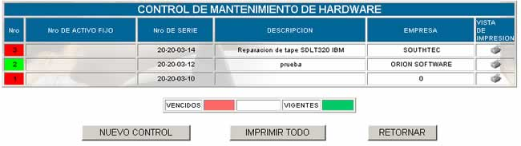
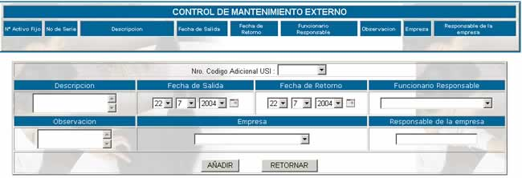

MANTENIMIENTO FUERA

Como en el anterior caso, cuando se requiere
realizar el mantenimiento de un recurso fuera de la empresa, ésta se debe
registrar en esta opción.
Nro,
especifica el número de control que se asigna automáticamente por el sistema.
Nro de activo fijo; especifica el número de activo fijo del código USI escogido.
Nro de Serie;
especifica el número de serie del recurso
Descripción; especifica la descripción que se hizo acerca del
mantenimiento
Empresa; especifica el nombre de la empresa que realizará el
mantenimiento.
El botón NUEVO
CONTROL permite planificar un nuevo mantenimiento externo. La pantalla que
se muestra es la siguiente:

Nro Código adicional USI; usted puede escoger entre los códigos USI que asignó
anteriormente en el momento del registro de la ficha técnica.
Descripción; realice una descripción detallada especificando por
qué se realiza el mantenimiento fuera de la empresa.
Fecha de salida; especifique en que día salió el recurso de la
empresa.
Fecha de retorno; especifique también el día que tiene que volver el
recurso a la empresa.
Funcionario responsable; anote el nombre de la persona que se hará cargo de
cualquier situación que pueda ocurrir con el recurso.
Observación; anote las observaciones que usted considere
pertinentes, especialmente si los días que el recurso se encuentra fuera de la
empresa son muchos.
Empresa; usted puede escoger la empresa solamente un nombre
de algún proveedor registrado.
Responsable de la empresa; anote el nombre del responsable de la empresa de mantenimiento
sobre la cual se realizará la transacción.
Presione AÑADIR una vez llenados
estos datos.
Vista de impresión; para obtener un reporte completo del mantenimiento
externo presione en  .
.
Imprimir todo; genera un reporte de la lista completa de
mantenimiento.